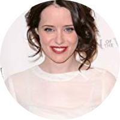

Happy Users
What our users say about the platform
Pierre Hackett
Student

Natalia Sanz
A worker

Ece Akman
House Wife
Create custom landing pages with Shades that convert more visitors than any website, no coding required Create custom landing pages with Shades that convert more visitors than any website, no coding required. Create custom landing pages with Shades that convert more visitors than any website, no coding required. Create custom landing pages with Shades that convert more visitors than any website, no coding required. Create custom landing pages with Shades that convert more visitors than any website, no coding required. Create custom landing pages with Shades that convert more visitors than any website, no coding required.
Create custom landing pages with Shades that convert more visitors than any website, no coding required Create custom landing pages with Shades that convert more visitors than any website, no coding required. Create custom landing pages with Shades that convert more visitors than any website, no coding required. Create custom landing pages with Shades that convert more visitors than any website, no coding required. Create custom landing pages with Shades that convert more visitors than any website, no coding required. Create custom landing pages with Shades that convert more visitors than any website, no coding required.
I came to the platform with a heavy heart, but the councellors are caring and loving, i dismissed my suicide though at once, Thank you ZeroDepression Team